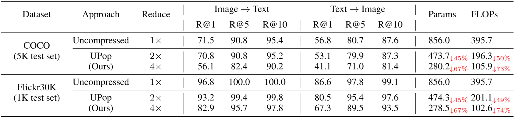

Compress BLIP on the NLVR2. Bold indicates the best performance
at the same compression ratio. Reduce indicates compression times. The marker
✓ or ✗ indicates whether the model converges at the current compression times.
The units of Params and FLOPs are M and G, respectively
Compress BLIP on the Image Caption task and the Visual Question Answering task. The CIDEr, SPICE, test-dev, and
test-std are the higher the better. The units of Params and FLOPs are M and G, respectively.
Compress BLIP on the COCO and Flickr30K datasets of the Image-Text Retrieval task. The R@1, R@5, and R@10 are the
higher the better. The units of Params and FLOPs are M and G, respectively.

Compress CLIP on the COCO and Flickr30K datasets of the Image-Text Retrieval task.
UPop also works well on uni-modal task. Compress DeiT on the ImageNet dataset. The units of Params and FLOPs are M and G, respectively. The superscript *
indicates the performance of the deployable model if the original model is non-deployable. For fairness of comparison, all reported experimental
results, including UPop, do not use knowledge distillation.
UPop can also achieve very competitive performance on uni-modal task. The left and right subfigures illustrate the Accuracy-FLOPs and Accuracy-Parameter trade-off, respectively. ∗
indicates the performance of the deployable model if the original model is non-deployable. Two subfigures demonstrate that the proposed UPop
(marked with the blue triangle) achieves better performance on both trade-offs. Note that token-specific compression approaches only
reduce FLOPs and not the number of parameters. Therefore they are vertical lines in the Accuracy-Parameter trade-off figure.
UPop can also achieve very competitive performance on uni-modal task. Compress Segmenter on the ADE20k dataset. The units of Params and FLOPs are M and G, respectively. The SS and MS
mean single-scale and multi-scale testing for the mIoU metric, respectively. With and Without superscript * means CNN-based and
Transformer-based models, respectively.